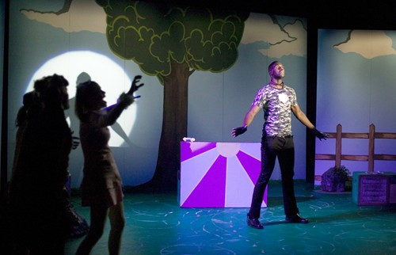

THE TUCSON CAST
Photos by Kenn Jensen
www.kennjensen.com
Scroll down for photos from dress rehearsal
Elizabeth Cracchiolo ~ Golde
Liz Cracchiolo is thrilled to be working with AZ Onstage again in BARK! She has appeared in a number of AOP productions, including “Heart and Music” and “Ruthless.” Most recently, Liz received rave reviews for her performance as Georgie in AOP’s production of “The Full Monty.” She is a native Tucsonan and has a Musical Theatre degree from the University of Arizona. This September, Liz will present her 3rd annual cabaret to benefit a local charity. For tickets and more information, go to www.lizdiva.com"
Hey there! I'm Jody (aka the puppy)! Currently, I study Musical Theatre Management at the University of Arizona and bring home the Beggin' Strips by acting in "Murder at Magic Manor," a local murder mystery dinner theatre. I have performed such roles as Joseph in "Joseph and the Amazing Technicolor Dreamcoat" and Nicely-Nicely in "Guys and Dolls." Although I am honored and thrilled to be performing in this magical production of BARK!, I am trying not to mess the rug while learning these complex harmonies.
Kit Runge has played many roles over the years, both on and off the stage (you figure out which is which), including soldier, architect, husband, count, millionaire, hunter, engineer, private detective, author, gambler, father, lord, and expert witness. While "old dog" does not show up on that list, that omission to date could have been up for debate - no more. Kit would like to thank his incredible wife Debbie and his three charming daughters Savannah, Piper, and Indigo for their continued patience (thanks sweetheart!), love, and support, and he dedicates this show to Cookie, their pet Sheltie.
Stephanie Sikes, who is portraying Chanel, is a classically trained lyric soprano who also enjoys jazz and blues. Stephanie is the Director of her Vocal Velocity Music Studio and is currently finishing a second Masters Degree in Marriage, Family & Child Therapy. Please note: Romeo & Julliette, her personal felines, have given her permission to "pretend" she is a D-O-G in this show.
Marcus Terrell Smith graduated in May from the University of Arizona where he minored in Theatre Arts and German. His earlier roles include: Keith in "Elegies: Looking Up," Jake/The Cannibal King in "SideShow," Bruce in "Beyond Therapy," David/Lazurus, Judas in "Godspell," Horse in "The Full Monty" and others. This is his third production with Arizona Onstage. He would like to thank God for all His blessings and his family and friends for their unfailing encouragement and support.
Shayna Vercillo is sock-a-liciously excited to be howling with all you fellow pups and the doggedly hard working Kevin and crew. Her wish is for all pets to have a loving home with foooood. So give an extra helping of love and adopt a homeless pet.
Whizzin' on Stuff
Dirty Filthy Old Flea Bag
Photos below from dress rehearsal by Tim Fuller

Ruff Ruff World
Ruff Ruff World
Siren Symphony
Life Should Be Simple
Il Cane dell'Opera>
Siren Symphony
Siren Symphony
Guarding Missy